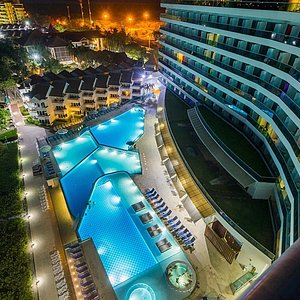
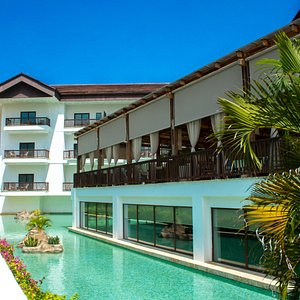
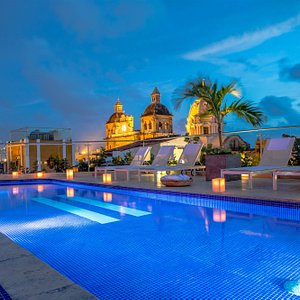
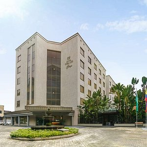

HOTELES 5 ESTRELLAS EN COLOMBIA

El Hotel Las Américas Torre del Mar es un complejo de lujo situado frente al mar en la zona norte de Cartagena de Indias en la playa La Boquilla.
Descubre por qué tantos viajeros ven Hotel Caribe By Faranda Grand como el hotel ideal cuando visitan Cartagena. Además de aportar la combinación ideal de calidad, comodidad y ubicación, ofrece un ambiente romántico con una amplia variedad de servicios diseñados para viajeros como tú.

Frente al Caribe Caribe, se encuentra el Hotel Meliá Cartagena Karmairí con una experiencia única de viajar, o hospedarse dentro de los 15 años de hospedarse, en un lugar mágico. Se encuentra a 15 minutos de la ciudad de Cartagena en India, una ciudad fascinante que combina la arquitectura colonial, y su simpatía por las frutas y verduras exóticas. El concepto hotelero se basa en las nuevas tendencias en calidad ambiental, reducción de la huella de carbono y desprendimiento de espacios entre la bisagra y el cuerpo del casco con elementos como la cercanía y opciones de hospitalidad provistas de comida y cobijo opcionales.
Bajo la luna de Cartagena renace un lugar de inspiración y tranquilidad donde el tiempo se detiene para recibirlo y envolverlo en una sutil magia. Frente a la tradicional Plaza de la Aduana, en un elegante edificio Republicano de tres pisos de altura, es posible descubrir un lugar donde la sensibilidad y la inspiración tienen su hogar: SOPHIA HOTEL. En cada una de las 15 habitaciones se respira la magia de la ciudad, todo bajo una experiencia atemporal que combina historia y actualidad tanto en el diseño de sus espacios como en los servicios que envuelven la estadía de los huéspedes
El Hotel Poblado Plaza ofrece elegancia y glamur. Se encuentra ubicado en el exclusivo sector de El Poblado a 5 minutos a pie del Centro comercial Oviedo y Centro Comercial Sante Fe. El hotel está equipado con: recepción 24 horas, parqueadero, desayuno buffet, conexión Wi-Fi gratuita, convenio con el gimnasio Bodytech (100 mts) y acceso para personas con movilidad reducida. Las habitaciones del Hotel Poblado Plaza Incluyen: aire acondicionado, Room Service, DirecTV, cajilla de seguridad, menú de almohadas, amenidades de baño, máquina para café y minibar (con costo adicional). El Hotel cuenta con un restaurante ubicado en el jardín y de servicio a la carta con gastronomía nacional e internacional. El hotel se encuentra a 100 mts del Distrito de negocios milla de oro, a 5 km del Centro de Convenciones Plaza Mayor y a 7 km de la Unidad Deportiva Atanasio Girardot.
